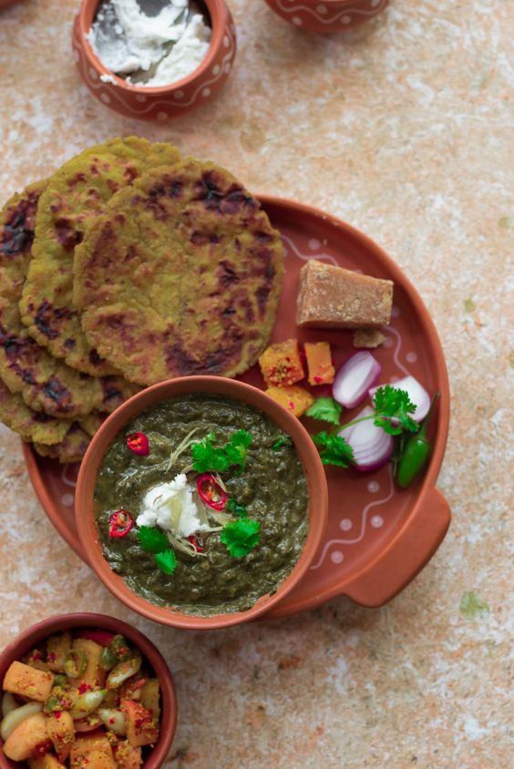
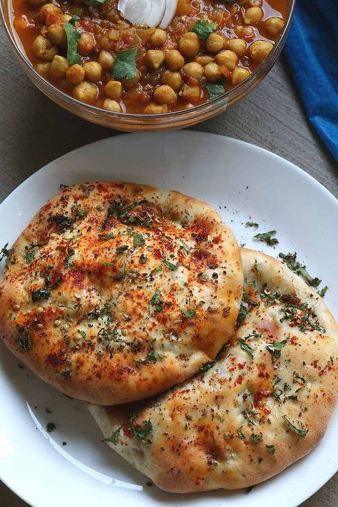
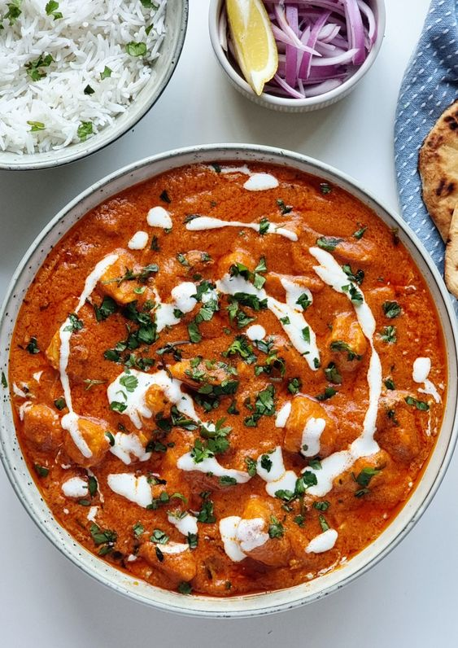

Famous Foods of Punjab
Makki di Roti & Sarson da Saag

Makki di Roti Recipe:
- Ingredients:
- 2 cups maize flour (makki ka atta)
- Warm water, as required
- 1/2 teaspoon salt
- Ghee for roasting
- Instructions:
- Combine maize flour and salt in a bowl.
- Add warm water gradually to make a soft dough.
- Divide the dough into small balls and flatten them using your palms.
- Heat a tawa and roast the rotis with ghee until golden brown.
- Serve hot with Sarson da Saag.
Sarson da Saag Recipe:
- Ingredients:
- 500g mustard greens (sarson)
- 250g spinach (palak)
- 1 onion, chopped
- 2 tomatoes, chopped
- 4-5 garlic cloves, chopped
- 1-inch ginger, chopped
- 2 green chilies, chopped
- 2 tablespoons maize flour
- 2 tablespoons ghee
- Salt to taste
- Instructions:
- Boil mustard greens and spinach until tender, then blend into a coarse paste.
- Heat ghee in a pan and sauté garlic, ginger, green chilies, and onion until golden.
- Add tomatoes and cook until soft.
- Add the blended greens and cook on low heat for 15 minutes.
- Add maize flour to thicken the saag, mix well, and cook for another 5 minutes.
- Serve hot with Makki di Roti.
Amritsari Kulcha

Amritsari Kulcha Recipe:
- Ingredients:
- 2 cups all-purpose flour (maida)
- 1/2 cup yogurt
- 1 teaspoon sugar
- 1 teaspoon baking powder
- 1/2 teaspoon baking soda
- 1/2 cup boiled and mashed potatoes
- 1 onion, finely chopped
- 1/2 teaspoon cumin seeds
- 1/2 teaspoon garam masala
- 1 tablespoon chopped coriander leaves
- Salt to taste
- Butter for brushing
- Instructions:
- Mix flour, yogurt, sugar, baking powder, and baking soda to form a dough. Let it rest for 1-2 hours.
- Mix mashed potatoes, onion, cumin seeds, garam masala, coriander leaves, and salt for the filling.
- Divide the dough into balls, stuff each with filling, and flatten into discs.
- Preheat a tawa or griddle and cook the kulchas with butter until golden brown on both sides.
- Serve hot with chole or pickles.
Butter Chicken

Butter Chicken Recipe:
- Ingredients:
- 500g chicken, cut into pieces
- 1 cup yogurt
- 2 tablespoons lemon juice
- 2 tablespoons butter
- 1 onion, finely chopped
- 2 tomatoes, pureed
- 1/2 cup cream
- 1 tablespoon ginger-garlic paste
- 1 teaspoon red chili powder
- 1 teaspoon garam masala
- Salt to taste
- Instructions:
- Marinate chicken in yogurt, lemon juice, and salt for at least 2 hours.
- Heat butter in a pan, sauté onions until golden, then add ginger-garlic paste and cook for 2 minutes.
- Add tomato puree, red chili powder, and cook until the oil separates.
- Add marinated chicken and cook until done.
- Stir in cream and garam masala, cook for another 5 minutes.
- Serve hot with naan or rice.